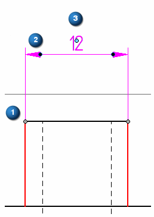
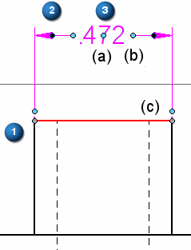
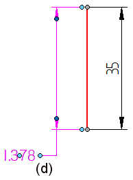
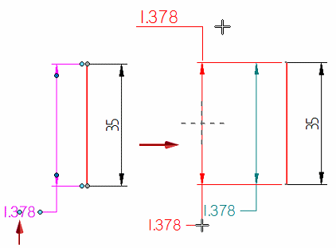
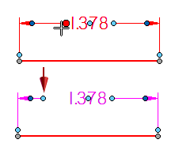
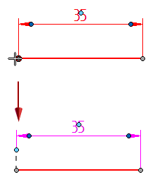
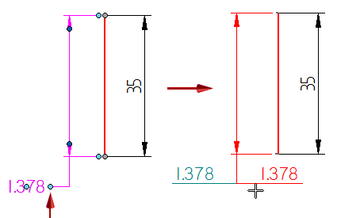

Dimension edit handles
Dimensions have a standard set of color-coded handles to indicate their behavior during edits. When you select a dimension, the handles are visible.
For information about 3D dimension edit handles, see the help topic PMI edit handles and cursors.
Identifying handles based on color and location
There are three types of handles that appear on a dimension. The handle colors identify the type of edit the handle performs. The location of the handle indicates what will change.
Edit handles for a dimension (ISO standard) are (1) a gray connection handle, (2) a dark blue terminator handle, and (3) light blue edit handles.

For an ANSI standard dimension, the light blue edit handles are located at (3a, 3b, 3c, 3d):


Using the handles
Refer to the following table for an explanation of what the handles do. To learn how to use the dimension edit handles, as well as other techniques for moving a dimension, see the help topic, Move a dimension.
|
Handle name and location |
Purpose |
Does this |
|
(1) Connection handle |
Connects a dimension projection line to an element. |
Changes the length of the projection line. Alt+drag disconnects the handle from the parent geometry. |
|
(2) Terminator handle |
Modifies the selected terminator, dimension line, and projection line. |
|
|
(3) (3a) Dimension text edit handle |
Moves dimension text. |
Drags the dimension text along the dimension line.
For dimension text with a break line, changes the length of the break line and moves the dimension text to the opposite side of the dimension line.  |
|
(3b) Dimension line edit handle |
Adjusts the length of a dimension line. |
Lengthens or shortens the selected dimension line.  |
|
(3c) Projection line edit handle |
Adjusts the length of a projection line. Note:
For ISO dimensions, the projection line edit handle is coincident with the connection handle. It is not visible until you drag it. |
Lengthens or shortens the selected projection line.  |
|
(3d) Break line edit handle |
Adjusts the length of a break line associated with dimension text. |
For dimension text with a break line, changes the length of the break line and moves the dimension text to the opposite side of the break line.  |
 Displays a menu of dimension formatting commands:
Displays a menu of dimension formatting commands:

The handle colors are defined by the Handle 1, Handle 2, and Handle 3 colors on the Colors tab in the Solid Edge Options dialog box. The default handle colors are different in 2D and 3D environments.
How do I
Edit a 2D dimension (sketch, profile, draft)Move a dimension
Display a half dimension
Set terminator size and shape
Change dimension behavior
Change the orientation of a dimension
Break a dimension projection line
Remove breaks from a dimension projection line
Change the parent of a dimension by dragging it
Reattach a dimension or annotation using the Attach Dimension command
Add and remove jogs on a dimension
Activate a part for dimensioning in a draft quality view
Learn more
Snap indicators for dimensionsLook up more details
Attach Dimension commandAdd Projection Line Break command
Remove Projection Line Break command
Activate Part command